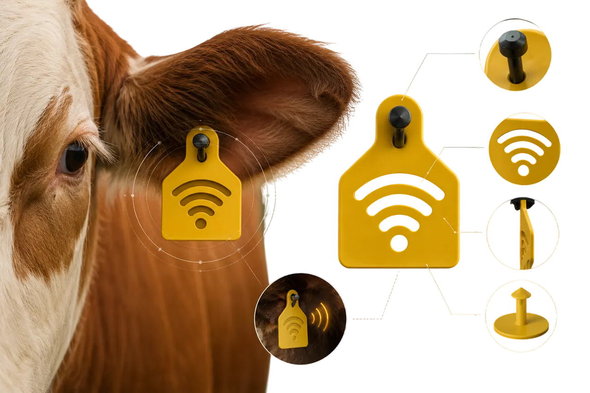
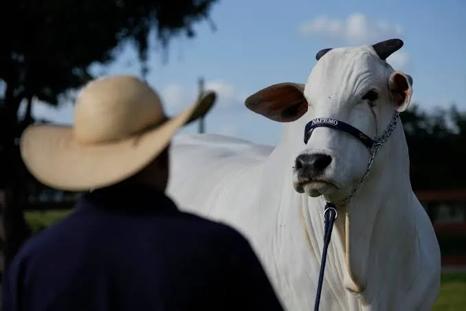
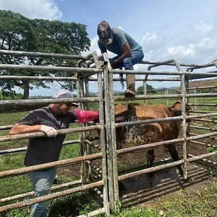
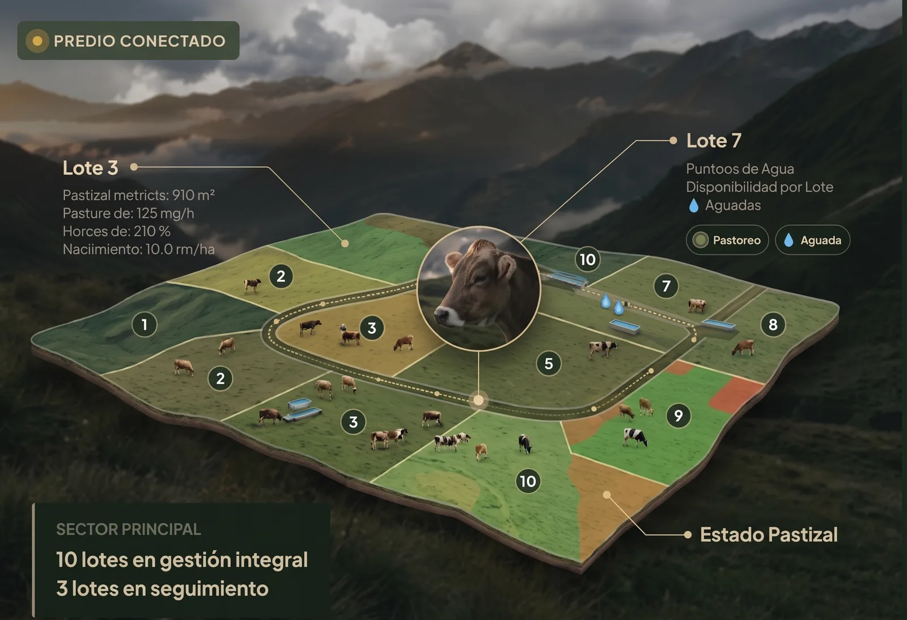

Registros manuales y dispersos
Cuadernos de campo y notas sueltas que dificultan reconstruir el historial completo y continuo de cada animal cuando se necesita con urgencia.
Tecnología pensada para la ganadería que conecta la información de cada ejemplar, del potrero al veterinario.
Información que acompaña al ganado y a quienes lo cuidan.

Somos una empresa peruana que innova la ganadería con tecnología cercana, útil y pensada para la realidad del campo.
Desde 2026 desarrollamos ICHU: una plataforma que reúne la información de cada ejemplar, las señales del hato y el acompañamiento veterinario para tomar decisiones oportunas y cuidar mejor cada producción.
La labor ganadera genera datos todos los días. Sin embargo, gran parte de este conocimiento se pierde o se queda fragmentado.
Cuadernos de campo y notas sueltas que dificultan reconstruir el historial completo y continuo de cada animal cuando se necesita con urgencia.
Un descenso en el pastoreo, una variación térmica o un aislamiento en el potrero suelen notarse cuando el problema ya ha avanzado, elevando costos y riesgos.
Cuando el médico veterinario llega al corral, muchas veces debe evaluar sin contar con la bitácora previa de síntomas, dosis aplicadas o fechas exactas.
Supervisar la rotación de parcelas de pasto, la disponibilidad de aguadas y la ubicación de grupos de animales en terrenos amplios requiere tiempo constante.
Llevar un recuento claro de forraje adicional, tratamientos y mermas resulta complejo cuando no existe una estructura organizada para el registro.
Dificultad para alinear lo que observa el personal de campo, lo que registra el administrador y las pautas que indica el especialista veterinario.
ICHU es una plataforma pensada para ayudar a ganaderos y veterinarios a organizar y entender mejor la información de cada animal y del campo.
ICHU no reemplaza al veterinario. Le da más información para trabajar.
La tecnología observa y recopila patrones; el criterio profesional y el conocimiento ganadero definen la acción.
Diseñado para simplificar la jornada de trabajo. Un espacio claro para tener el control de su ganado en la palma de la mano.

Acceda a un historial cronológico fidedigno. Conozca qué ocurrió con el animal en los días previos, revise tendencias y respalde sus diagnósticos con datos contextuales reales.
El veterinario ve más contexto. El ganadero recibe mejor acompañamiento.Solicitar demostración para profesionales

La ganadería no es una hoja de cálculo estática: es un ciclo biológico vivo. ICHU organiza los hitos fundamentales de la vida de cada ejemplar para preservar su memoria productiva y sanitaria desde sus primeros días.
Asignación de arete, genealogía, fecha de nacimiento y características.
Observación de rutinas de pastoreo, desplazamiento y descanso.
Rotación de pastos, suplementación mineral y acceso a agua.
Registro de celos, servicios, partos, destetes o cambios repentinos.
Revisión clínica presencial respaldada con la lectura de datos.
Aplicación de medicamentos o vacunas con registro de dosis.
Comprobación de recuperación y continuidad productiva.
ICHU está siendo concebida para conectarse progresivamente con dispositivos de telemetría e Internet de las Cosas (IoT) diseñados para soportar el clima y las condiciones de nuestra geografía.
Monitoreo de oscilaciones térmicas para identificar tempranamente cuadros febriles, estrés calórico o alteraciones metabólicas antes de síntomas visibles.
Detección de índices de actividad física, rumiación, tiempo de descanso o letargo que puedan sugerir malestar, celo o inicio de parto.
Localización por sectores y potreros para prevenir pérdidas por extravío, optimizar el pastoreo rotativo y resguardar la seguridad del ganado.
Las alertas de ICHU funcionan como un llamado de atención oportuno para que el ganadero o veterinario inspeccione al animal a tiempo.
Vaca #089 registró 45% menos desplazamiento durante las últimas 6 horas de pastoreo habitual.
Toro #014 registró 39.4 °C de manera sostenida en dos lecturas consecutivas.
Grupo de 3 vaquillonas detectadas próximas al cerco perimetral este.
Recordatorio de segunda dosis de tratamiento prescrito para Ternero #201.
Nota de responsabilidad técnica: las alertas y métricas mostradas son herramientas de orientación conceptual. No constituyen un diagnóstico clínico automatizado ni sustituyen el juicio profesional del médico veterinario.
El animal depende de sus pasturas, el agua y la administración del predio. ICHU ayuda a visualizar la finca como una operación ordenada.

Administre la rotación de forraje, planifique los suministros hídricos y mantenga un inventario vivo de animales sin depender de hojas sueltas.
Disponibilidad en bebederos.
Recuperación de canchas.
Control de forraje y fármacos.
Nacimientos y traslados.
La gestión ganadera involucra compromisos sanitarios y normativas oficiales. ICHU busca facilitar la organización de información útil para la gestión productiva y veterinaria, dentro del marco de las obligaciones aplicables a cada actividad.
Ministerio de Desarrollo Agrario y Riego: políticas de desarrollo pecuario, pastos y fomento productivo.
Portal institucionalServicio Nacional de Sanidad Agraria: calendarios de vacunación oficial, control zoosanitario y aretado.
Normativa sanitariaPPA (MIDAGRI): registro oficial para la identificación y acceso a servicios del Estado.
Información PPAEstamos construyendo una nueva forma de conectar tecnología, ganadería y acompañamiento veterinario. Déjanos tus datos para coordinar una presentación guiada.
¡Hola! Bienvenido a ICHU. ¿Te gustaría agendar una demostración para tu ganado o conocer el historial clínico?
09:15 amHola, tengo un hato ganadero y quiero ver cómo registran los aretes y las alertas de temperatura.
09:16 am¡Excelente! En la demo personalizada te mostraremos cómo opera la ficha de cada animal y cómo se conecta con el veterinario.
09:16 amSimulación ilustrativa de la asistencia de ICHU. Las respuestas automáticas no reemplazan la atención del equipo.
El campo sabe. ICHU ayuda a convertir ese conocimiento en información clara y oportuna para proteger el fruto de tu trabajo.
Solicitar una demostración